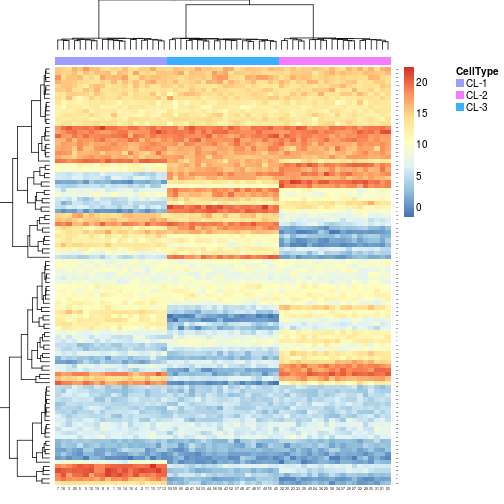

rpure(x, n = 100, p = 20, min = 0, max = 20)
an ExpressionMix object that contains the
expression data, the pure basis signatures, and a
phenotype variable 'CellType', which indicates the
cell type of each sample.
rpure generates random expression data that
simulates pure cell type samples, that share most gene
expression profile pattern.
x <- rpure(3)aheatmap(x, annCol=TRUE)